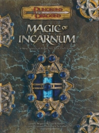

“Magic of Incarnum” on the
Shelf of Many Books

Magic of Incarnum: A New Source of Power for Your D&D Game
D&D 3.5
(3e)
Year
: 2005 (September)
Magic of Incarnum
on Amazon
Magic of Incarnum
on Amazon
Magic of Incarnum
on TSR Info
Known monsters from the book:
Azurin
Dissolution Ooze
Duskling
Incarnum Dragon
Incarnum Golem
Incarnum Wraith
Lost
Midnight Construct
Necrocarnum Zombie
Rilkan
Skarn
Souleater
Soulfused Construct
Soulspark
Totem Giant